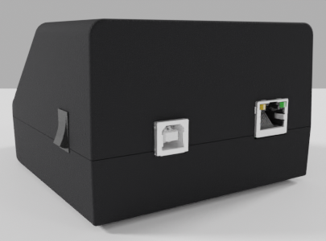

API¶
USB¶
Le connecteur USB situé à l’arrière du boitier Taka permet une connexion à un PC.
Exemple WebUSB¶
Un exemple d’utilisation de cette API est fournie dans une application WebUSB utilisable depuis un navigateur Web (Chrome). Cette application implémente l’ensemble des fonctionnalités fournies par l’API et peut donc servir de référence.
Installation¶
Voir le README https://github.com/lambdaconcept/taka/tree/master/utils/takaweb
(Linux) Install Udev rules
==========================
Write the rule in:
/etc/udev/rules.d/52-taka.rules
-------------------------------
ACTION=="add", SUBSYSTEM=="usb", ATTRS{idVendor}=="ffff", ATTRS{idProduct}=="1234", MODE="0664", GROUP="plugdev"
-------------------------------
Reload the rules:
# udevadm control --reload-rules && udevadm trigger
(Windows) Install WinUSB driver
===============================
https://zadig.akeo.ie/
Assign "WinUSB" driver to the device.
Run the HTTP server for testing
===============================
$ python3 -m http.server
In a Web browser (Chrome), connect to:
http://127.0.0.1:8000/
{kind=link}
Lecture des fichiers ARCH¶
Lorsqu’une carte d’identité provisionnée avec l’application ARCH est insérée dans le boitier Taka, le contenu des fichiers ARCH peut être lu via l’API:

Lecture des fichiers ICAO¶
Lorsqu’une carte d’identité provisionnée avec l’application ICAO (eTravel) est insérée dans le boitier Taka, le contenu des fichiers ICAO DG1 à DG16 peut être lu via l’API:

Lecture des journaux¶
A tout moment le contenu des logs stockés dans le boitier Taka (sur carte SD) peut être lu via l’API. La requête doit préciser la date voulue (1 jour à la fois). Voir la section Journaux pour le descriptif du format journal.

Lecture d’empreinte¶
L’empreinte digitale capturée par la caméra optique est accessible par l’API. Seule la dernière image capturée est disponible, une nouvelle tentative écrasant l’image précédente.
3 images sont récupérables:
Frame Raw: image reçue du capteur sans aucun traitement
Frame Morph: image après traitements de correction de déformations et d’aberration
Minutiaes: empreinte + représentation des minutiaes trouvés


Détails du protocole API USB¶
Le protocole est implémenté sous la forme de commandes/réponses. Les commandes sont toujours émises par le host (PC), auxquelles le device (Taka) répond. Taka n’émet pas de messages USB sans être sollicité au préalable par une commande reçue du host.
Implémentation de référence: (Javascript) voir https://github.com/lambdaconcept/taka/blob/master/utils/takaweb/index.js
Les commandes respectent le format suivant:
1er octet (obligatoire): numéro de la commande
octet suivants (optionnels): paramètres de la commande
Liste des commandes:
Nom |
Numéro |
Paramètres |
|---|---|---|
Get Version |
0x00 |
|
Get ARCH |
0x01 |
1 octet |
Get ICAO |
0x02 |
1 octet |
Get Logs |
0x03 |
8 octets |
Get Frame Raw |
0x04 |
|
Get Frame Morph |
0x05 |
|
Get Minutiaes |
0x06 |
Get Version¶
Description: Lit la version actuelle du firmware programmé sur le boitier Taka.
Numéro: 0x00
Paramètres: Aucun
Réponse: La version sous forme de chaine de caractères (NULL terminated). Exemple: “v.0.96”
Get ARCH¶
Description: Lit un fichier ARCH présent sur la carte d’identité. Le numéro du conteneur à lire est indiqué par un paramètre. Cette commande renvoie un paquet USB de taille vide (ZLP) lorsqu’aucune carte n’est insérée ou que le conteneur n’existe pas.
Numéro: 0x01
Paramètres: 1 octet, le numéro du fichier ARCH à lire (0x00-0x03)
Réponse: Renvoie le contenu du fichier ARCH demandé
Get ICAO¶
Description: Lit un fichier ICAO présent sur la carte d’identité. Le numéro du conteneur à lire est indiqué par un paramètre. Cette commande renvoie un paquet USB de taille vide (ZLP) lorsqu’aucune carte n’est insérée ou que le conteneur n’existe pas.
Numéro: 0x02
Paramètres: 1 octet, le numéro du fichier DG à lire (0x00-0x0f)
Réponse: Renvoie le contenu du fichier ICAO demandé
Get Logs¶
Description: Récupère les évènements ayant eu lieu le jour passé en paramètre.
Numéro: 0x03
Paramètres: 8 caractères ASCII au format “YYYYMMDD”, correspondant à la date du jour voulu
Réponse: Le contenu du fichier journal pour le jour demandé. Voir la section Journaux pour le descriptif du format journal.
Get Frame Raw¶
Description: Récupère la dernière image de l’empreinte capturée par la caméra. Il s’agit de l’image brute reçue du capteur sans aucun traitement.
Numéro: 0x04
Paramètres: Aucun
Réponse: L’image au format binaire (framebuffer 8bit grayscale, 640x380 px)
Get Frame Morph¶
Description: Récupère la dernière image de l’empreinte après les traitements de correction de déformations et d’aberration.
Numéro: 0x05
Paramètres: Aucun
Réponse: L’image au format binaire (framebuffer 8bit grayscale, 314x322 px)
Get Minutiaes¶
Description: Récupère l’ensemble des minutiaes extraits à partir de la dernière image capturée par la caméra. Cette commande renvoie un paquet USB de taille vide (ZLP) lorsque l’extraction à échoué (image de mauvaise qualité, doigt non présent, etc.)
Numéro: 0x06
Paramètres: Aucun
Réponse: Renvoie les minutiaes au format ISO/IEC 19794-2:2005 (Record Format, FMR)